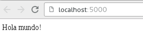
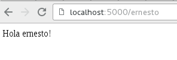

Tutorial de Flask parte 1
Publicado el sáb 03 septiembre 2016 en Tutorial Python • 4 min de lectura
Ya he escrito algunos artículos sobre flask:
La idea es ir generando una secuencia de artículos basados en los artículos de Flask by Example y los artículos de Flask mega tutorial de Miguel Grinberg. Ambos tutoriales en inglés como primer artículo usan virtualenv con pip, en el caso de esta serie se usará Docker.
El repositorio donde se alojará el código de la serie de tutoriales sobre flask los alojaré en Gitlab.
Se crea el directorio tutorial-flask:
mkdir tutorial-flask
cd tutorial-flask
Ahora se configura el usuario que se usa en git:
git config --global user.name "Ernesto Crespo"
git config --global user.email "ecrespo@gmail.com"
Se inicia el repo y se define el repo remoto:
git init
git remote add origin git@gitlab.com:ecrespo/tutorial-flask.git
Se crea el archivo README.md, se agrega el archivo a git y se hace commit:
touch README.md
git add README.md
git commit -m"Se creo el archivo readme"
Se define el upstream de git y se sube al repositorio de gitlab:
git push --set-upstream origin master
La estructura de directorios y archivos es el siguiente:
tutorial-flask
├── app
│ ├── __init__.py
│ └── views.py
├── docker-compose.yml
├── Dockerfile
├── README.md
└── run.py
Crear los archivos .gitignore, Dockerfile y docker-compose.yml:
touch .gitignore
El archivo Dockerfile contiene el uso de python como sistema base, se define el directorio /code, se instala las librerías requeridas, se agrega los archivos al directorio /code y se ejecuta run.py:
FROM python
WORKDIR /code
RUN pip install --upgrade pip
RUN pip install flask
RUN pip install flask-login
RUN pip install flask-openid
RUN pip install flask-mail
RUN pip install flask-sqlalchemy
RUN pip install sqlalchemy-migrate
RUN pip install flask-whooshalchemy
RUN pip install flask-wtf
RUN pip install flask-babel
RUN pip install guess_language
RUN pip install flipflop
RUN pip install coverage
RUN pip install redis
EXPOSE 5000
ADD . /code
CMD python run.py
El archivo docker-compose.yml contiene lo siguiente:
#Se define el servicio web, la construcción de la imagen se hace con el archivo Dockerfile, se define el puerto a exportar (5000) y el volumen /code.
web:
build: .
ports:
- "5000:5000"
volumes:
- .:/code
El archivo run.py contiene lo siguiente:
#!/usr/bin/env python
from app import app
app.run(host="0.0.0.0",debug=True)
El archivo app/__init__.py contiene lo siguiente:
from flask import Flask
app = Flask(__name__)
from app import views
El archivo app/views.py contiene lo siguiente:
#!/usr/bin/env python
from app import app
@app.route('/<nombre>')
def hola_nombre(nombre):
return "Hola {}!".format(nombre)
@app.route('/')
def hola():
return "Hola mundo!"
Ahora se usará docker-compose:
docker-compose build
Building web
Step 1 : FROM python
---> 7fd24fb1b492
Step 2 : WORKDIR /code
---> Using cache
---> bdc41d9c0a55
Step 3 : RUN pip install --upgrade pip
---> Using cache
---> a2f64276e289
Step 4 : RUN pip install flask
---> Using cache
---> 56d3d1077646
Step 5 : RUN pip install flask-login
---> Using cache
---> ebe8bc959ad8
Step 6 : RUN pip install flask-openid
---> Using cache
---> fe54237ce068
Step 7 : RUN pip install flask-mail
---> Using cache
---> f1594ad12f2b
Step 8 : RUN pip install flask-sqlalchemy
---> Using cache
---> 6d04889555c2
Step 9 : RUN pip install sqlalchemy-migrate
---> Using cache
---> d25cd2a54289
Step 10 : RUN pip install flask-whooshalchemy
---> Using cache
---> 4479491e59aa
Step 11 : RUN pip install flask-wtf
---> Using cache
---> 170b10c7dea0
Step 12 : RUN pip install flask-babel
---> Using cache
---> fe581f26a1e5
Step 13 : RUN pip install guess_language
---> Using cache
---> 6d2d290ed6d3
Step 14 : RUN pip install flipflop
---> Using cache
---> 35e2dff248ce
Step 15 : RUN pip install coverage
---> Using cache
---> 7012043af8e9
Step 16 : RUN pip install redis
---> Using cache
---> ce2854de687f
Step 17 : EXPOSE 5000
---> Using cache
---> f947cd2c0d69
Step 18 : ADD . /code
---> db09ee94c8e7
Removing intermediate container 2f21e7abd55d
Step 19 : CMD python run.py
---> Running in 1f58a7b38656
---> 4c8390d54c13
Removing intermediate container 1f58a7b38656
Successfully built 4c8390d54c13
Ahora se inicia el servicio con docker-compose:
docker-compose up
A continuación se muestra la imagen de la ejecución de docker-compose:

Ahora se abrirá el navegador en http://localhost:5000 , a continuación se muestra una imagen de la carga de la página:

Para terminar se abre el navegador en http://localhost:5000/ernesto, a continuación se muestra la imagen de la carga de la página:

El código de este artículo lo pueden bajar desde gitlab: download.zip. Tutorial de Flask rama articulo 1.
Para detener el servicio se ejecuta docker-compose:
docker-compose down
¡Haz tu donativo! Si te gustó el artículo puedes realizar un donativo con Bitcoin (BTC) usando la billetera digital de tu preferencia a la siguiente dirección: 17MtNybhdkA9GV3UNS6BTwPcuhjXoPrSzV
O Escaneando el código QR desde la billetera: